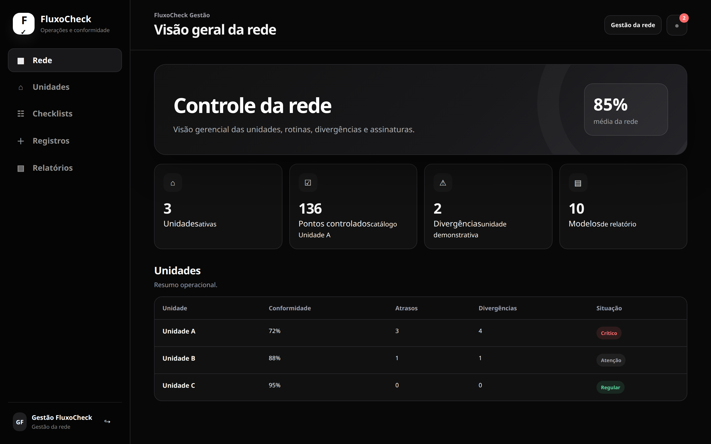

Checklists executados por cada unidade, divergências detectadas automaticamente e visão consolidada para a gestão. Saiba o que está acontecendo em cada ponto sem precisar estar lá.

Funcionalidades
Dashboard gerencial com conformidade média de todas as unidades, divergências abertas e alertas. Um número diz o estado de toda a operação.
Cada unidade executa checklists diários, semanais ou por turno. Pontos de controle personalizáveis com catálogo da rede ou local.
O sistema detecta pontos não executados, respostas fora do padrão e atrasos — sem precisar que o gestor procure o problema.
10 modelos de relatório por período, unidade ou tipo de checklist. Exportação para PDF ou tabela.
Receba alertas quando uma unidade atingir situação Crítica ou quando um ponto de controle não for executado no prazo.
Interface responsiva: gestão no desktop, execução dos checklists no celular diretamente da unidade, sem instalar nada.
Exemplo de visão da rede
O FluxoCheck está em desenvolvimento ativo. Entre em contato para participar do programa de acesso antecipado.
Solicitar acessoDados fictícios para demonstração. O produto está em desenvolvimento.